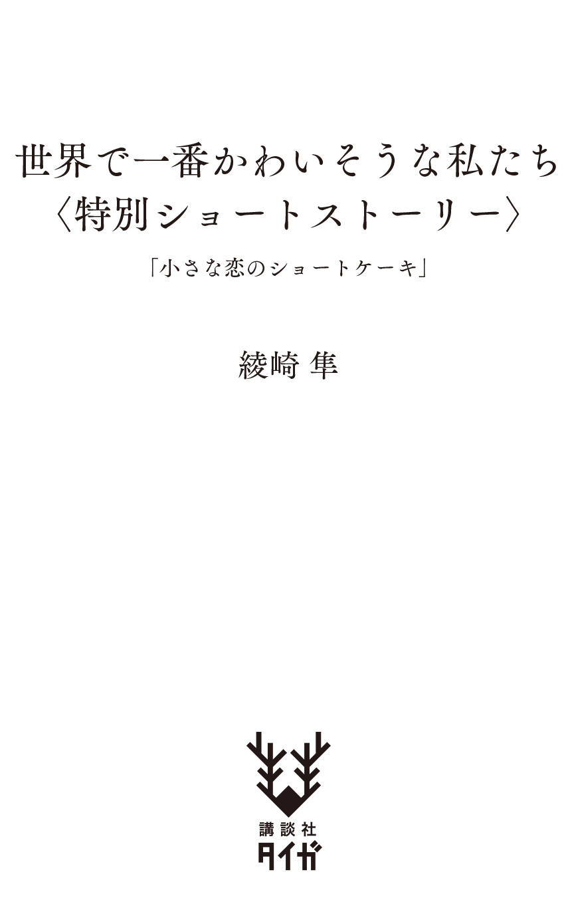

| 世界で一番かわいそうな私たち＜特別ショートストーリー＞ | |
| 綾崎隼 | |
| 講談社 (2018) | |

女の子という生き物は、十七歳になれば、誰もが恋をしているのだと思っていた。
声を失ってしまった自分みたいな人間を、恋人にしたいなんて考える男の子がいるとは思えないけれど、叶う叶わないはともかく、ドラマのように、少女漫画みたいに、素敵な誰かを好きになっているのだと想像していた。
十七歳になってもまだ、恋を知らない少女でいるなんて思わなかった。
放課後、蟬 時雨 の夕刻。
近所のいつものスーパーマーケット。
「詠 葉 。欲しい物があると言っていましたよね」
振り返った杏 先生に、用意してきたメモを手渡した。
『板チョコレート、無塩バター』
「なるほど。お菓子を作りたいんですね」
さすがは杏先生だ。メモを見て、一瞬でこちらの思 惑 に気付いたらしい。
メモ帳にペンを走らせる。
『チョコレートサンドクッキーを作ってみたいです。』
私は七歳の時に経験したある事件のせいで、声を出せなくなってしまった。お医者さんはトラウマが原因だと言うけれど、本当のところは自分でもよく分からない。事件直後は普通に話せたはずなのに、気付けば、声が出なくなっていたのだ。『緘 黙 症 』それが私に下された病名である。
声を取り戻すため、少しでも強くなれたらと願い、住み込みの生徒を受け入れていた東京都八 王 子 市にあるフリースクール『静 鈴 荘 』に移住してから、早いもので、もう四年が経 とうとしている。
目の前に立つ美しい女性、舞 原 杏 は、私にとって教師であると同時に、姉や母のような存在でもあった。
「お菓子作り、私も手伝いましょうか？」
首を横に振る。
現在、九人が暮らしている静鈴荘の家事を、杏先生はほとんど一人で担っている。今日のように買い出しや料理は、生徒が手伝うこともあるけれど、むしろ私たちに教えることで、余計に手間がかかっているというのが実状だ。
杏先生とはもう何度も一緒にお菓子作りをしている。先生にもらったレシピがあれば、一人でも大丈夫だろう。
誰よりも忙しい先生の時間を、これ以上、奪いたくなかった。
静鈴荘には下宿生が私を入れて五人いる。
学年で言えば高校二年生の私と、中学生と小学生が二人ずつだ。
午後九時。
夕食の後、完成したクッキーを、デザート代わりに配って回ることにした。
思わぬ差し入れを皆が喜んでくれたし、甘い物が大好きな小学四年生の咲 希 は、特に嬉しそうにしていた。
杏先生と家主の詩 季 さん、それに、涼 子 先生にも渡すことが出来た。
これで残りは、夕食後、早々に自室に戻ってしまった佐 伯 先生、ただ一人である。
佐 伯 道 成 、二十五歳の元社会科教師。
今月から静鈴荘で居 候 を始めた、背が高くて、男らしくて、たくましい人。
佐伯先生のことを思い出す時、私は心の中がよく分からなくなる。
マシュマロみたいにふわふわしている気もするし、炭酸ガスの気泡を閉じ込めたパチパチするキャンディのような気持ちになることもある。
でも、多分、一番近いのはチョコレートだろう。
甘くて、少しだけ苦い、そんなビターチョコレート。
部屋の扉をノックすると、十秒もせずに佐伯先生が現れた。
日中は白いワイシャツを着ていることが多い先生だが、今はラフなパーカーを羽 織 っていた。
用意していたメモを差し出す。
『チョコレートサンドクッキーを作ったんです。夜食に食べて下さい。』
「へー。ありがと。皆で作ったの？」
首を横に振る。
「じゃあ、一人で作ったのか。器用だな」
私はいつでもペンとメモ帳を持ち歩いている。
伝えたい言葉をメモ帳に走らせた。
『杏先生が手製のレシピを沢山持っているんです。これも、その一つです。』
文面を読み、佐伯先生は何故か苦笑した。
「あの人は本当に芸達者だな。今、食べても良い？」
頷くと、ビニール袋を縛っていたリボンを解き、先生はクッキーをひょいと口に入れた。大人の男の人は口も大きい。私なら一口で食べるのは無理だ。
「うわ、美味いな。チョコが入ってるのが贅 沢 。駄 目 だ。止まらない」
そんなことを言いながら、先生は二つ目のクッキーも口に運んでくれた。佐伯先生は身体が大きいからか、いつも気持ち良いくらいの食べっぷりを見せてくれる。
『そんなに喜んでもらえるとは思わなかったです。違うレシピももらったので、また、食べて下さいね。』
「ああ。楽しみにしてるよ。ありがとう」
先生の凜とした声が、鼓 膜 に滑 り落ちていく。
声を取り戻せたら「おやすみなさい」だって言えるのに。
伝えたい思いを、すぐには形に出来ない自分がもどかしかった。
喜ぶ皆の顔がもう一度見たい。
美味しそうに頰 張 る佐伯先生を眺めていたい。
静鈴荘は年中無休で開いているけれど、週末や祝日は授業がお休みになる。
三日後、土曜日の午後。
私は杏先生にもらっていた、もう一つのレシピ『白桃のケーキ』作りに挑戦することにした。
家庭科の授業で、杏先生と一緒に作ったエプロンを着用し、材料と各種器具を用意したらお菓子作りスタートだ。
まずはスポンジケーキ作りから。
ボウルに全卵を割り入れ、砂糖も加えて、泡立てていく。これがなかなか大変な作業なわけだが、現代には便利なハンドミキサーという代物がある。文明の利器に頼れば、あっという間に終わると思ったのに......。
ボウルに入れ、回し始めてすぐに、ハンドミキサーが動かなくなってしまった。そう言えば、最近、調子が悪いと杏先生が言っていた気がする。
弱った。ケーキを作ってあげると、皆にはもう告げてある。咲希だけじゃない。大和 やひー君まで大喜びしていた。
泡立て作業は本当に大変だ。
レシピによれば、気泡がなくなって白くなり、クリーム状にもったり重くなるまで続けなければならないらしい。生地を持ち上げて字がかけるレベルまで混ぜる必要があり、そこまでの作業を十五分以内に終えられるのが理想なのだという。
ハンドミキサーを使ってもそれくらいかかってしまう作業を、たった一人で、しかも手でこなすなんて......。
お菓子作りを手動でやる人はたくさんいるけれど、たまにしか作っていない自分がするとなると、この先の行程を考えただけで気力が萎 えそうになる。腕力に自信はない。
絶望に襲われそうになったその時、
「また、お菓子作りか？」
台所に現れたのは私服姿の佐伯先生だった。
「お。今日は桃のケーキか」
テーブルに置かれていたレシピを見て、先生が笑顔を浮かべた。
「俺、桃、好きなんだ。楽しみにしてるよ」
麦茶を飲み干し、台所から出て行こうとした佐伯先生の裾を咄 嗟 に摑んでいた。
「ん？ どうした？」
驚いたような顔で振り返った先生に、メモ帳を使って告げる。
『困っています。助けて欲しいです。』
「どうした？ 何か材料でも買い忘れたのか？」
『スポンジケーキを作るために、これをかき混ぜなきゃいけないんですが、ハンドミキサーが壊れてしまったんです。長時間やらなきゃいけないので、一人では心配で。』
「なるほど。良いぜ。手伝うよ。これをかき混ぜたら良いんだよな」
ステンレス製のホイッパーを渡すと、手を洗った先生は、腕まくりをして、早速ボウルの中の卵と砂糖をかき混ぜ始めた。
『続けていると量が増えます。気泡もほとんどなくなりますが、さらにクリーム状になるまでかき混ぜて下さい。生地に字が書けるくらいです。』
「これ......結構、疲れるのな。確かにハンドミキサーなしで女の子一人じゃ、大変だ」
今日は土曜日。
静鈴荘で講師として働く佐伯先生にとっては、五日振りのお休みである。そんな日に、生徒のお菓子作りに付き合わせてしまうなんて申し訳ない。そう思う気持ちもあったけれど、途中で『変わります』と告げることが出来なかった。
タオルを手に取り、先生の額 に滲 んだ汗を拭 いてやる。
「ありがとう。詠葉は優しいな」
優しいのは先生の方だ。本当はやりたいことだってあっただろうに、文句一つ言わずに笑顔で手伝ってくれる。
マシュマロでも、パチパチするキャンディでもない。
この気持ちは一体、何だろう。
何 処 から来て、何を私に訴えているんだろう。
ビターチョコレートよりも柔らかくて脆 い、まるでショートケーキみたいな。
卵と砂糖がクリーム状になったら、そこから先は時間との勝負である。
さすがに先生も疲れてしまったはずだ。
最後の仕上げは、交代して私がやろう。
泡を均一にして、ふるった薄力粉を加えてやさしく混ぜ合わせていく。溶 かしたバターと牛乳、バニラエッセンスを加えると、先生が笑顔でボウルを覗き込んだ。
「良い匂いだな。完成、楽しみにしてるよ」
そんな風に言いながら、先生は二度、ポンポンと私の頭を軽く叩いて去って行く。
その後ろ姿を見つめたまま、しばし固まってしまった。
泡とのスピード勝負なのに。
一気に終わらせなきゃいけないはずだったのに。
予熱したオーブンだって準備万端で、生地の出来上がりを待っているのに。
先生の手が頭に触れた瞬間、身体中に電気みたいな何かが走った気がした。気のせいかも知れないけれど、本当にそんな気がした。
『ねえ、詠葉ちゃんってさ。もしかして佐伯先生のことが好きなんじゃない？』
昨日、お昼ご飯を食べていた時。
通学生の淳 奈 に、そんなことを言われた。
『詠葉ちゃん。最近、嬉しそうだから。もしかして、そうかなーって』
淳奈の言葉が、心の柔らかい場所でリフレインする。
頭に手を置かれた瞬間から、早 鐘 を打ち始めた心臓の鼓動が、鎮 まらない。
手元が小さく震えていたけれど、なすべきことはなさねばならない。出来上がった生地を型に流し込み、オーブンに入れる。
私は佐伯先生のことが好きなんだろうか。初恋なんてまだまだ先のことだと思っていたのに、十七歳になった私は男の人を......。
オーブンの中で膨 らんでいく生地が、まるで自分の心みたいだった。
焼き上がった型をオーブンから取り出す。
『焼き縮みを防ぐために、すぐに型ごと三十センチほどの高さから落として下さい。』
杏先生のレシピに従って型から外すと、スポンジケーキは無事に完成していた。
あんなに長時間、手で泡立てるなんて、きっと、私一人では無理だった。こんなに綺麗に焼き上がったのは、佐伯先生が助けてくれたからだ。
喜ぶのはまだ早い。白桃のケーキ作りの行程は、まだ半分である。
とはいえ、最も大変な作業を手伝えてもらえて本当に良かった。
気合いを入れて、後半戦に挑もう。
男の子たちはいつも本当に美味しそうにご飯を食べる。
一人っ子だった私は、静鈴荘で暮らすようになってから、そんなことを日々思うようになった。そして、それは佐伯先生も例外ではない。
その日も佐伯先生は、大きな口で気持ち良いくらいの食べっぷりを披露してくれた。
「やっぱり手作りはスーパーのケーキとは全然違うな！」
完成した白桃のケーキを、先生は美味しそうに頰張る。その嬉しそうな横顔を見つめているだけで、不思議と心が温かくなった。
明日も、明後日も、この横顔を見たい。気付けば、私はそんなことを考えていた。
不思議だ。
自分が作ったケーキを、ただ、美味しそうに食べてくれているだけなのに。
どうして目が離せなくなるんだろう。
どうして明日も笑って欲しいなんて思うんだろう。
いや、それだけじゃない。
どうして。
どうして、その笑顔を私にだけ見せて欲しいなんて思ってしまうんだろう。
私が初めての恋を自覚したのは、多分、あの日の夜のことだった。
自室に戻っても、佐伯先生の笑顔が忘れられなくて。
嬉しそうな声が鼓膜から離れてくれなくて。
私は、これが、人を恋するということなのだと気付いた。
生まれて初めての恋に落ちたのだと、気付いてしまった。
大人になって振り返った後で、私はこの頃の日々をどんな風に回 顧 するんだろう。
十七歳の少女は、きっと、恋に恋する愚 かな道 化 だ。
世界のことも、男の人のことも、ましてや自分のことすら理解していない。
だから、愚かな私は夢想していた。
佐伯先生は八つも年上の男の人だけれど、いつか声を取り戻すことが出来れば、私が大人になれば、必死になって頑張れば、振り向いてもらえるんじゃないだろうか。私が先生を好きになったように、先生にもいつか好きになってもらえるんじゃないだろうか。そんな未来を妄想していた。
だけど、そう、だけど......。
愚かな妄想の先に待ち受けていたのは、身を切られるよりも痛い未来だった。
あんな思いをするくらいなら、私は恋なんて知らない方がマシだった。
一九九九年、世紀末。
三 好 詠 葉 、十七歳。
その夏に私が経験したのは、多分、誰よりも痛くて哀しい恋の物語だった。
『世界で一番かわいそうな私たち 第一幕 』に続く
『世界で一番かわいそうな私たち 第一幕 』【2019年1月23日発売予定】については、
http://taiga.kodansha.co.jp/author/s-ayasaki.html
をご覧ください。
世 界 で一 番 かわいそうな私 たち〈特 別 ショートストーリー〉
二〇一八年一二月一日発行
綾 崎 隼
© Shun Ayasaki 2018
発行者 渡瀬昌彦
発行所 株式会社講談社
東京都文京区音羽二‐一二‐二一
〒112-8001
◎本電子書籍は、購入者個人の閲覧の目的のためにのみ、ファイルの閲覧が許諾されています。私的利用の範囲をこえる行為は著作権法上、禁じられています。
18D1201E
01